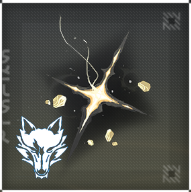

声骸评分对比

从角色声骸导入
添加声骸A词条
清空声骸B词条
添加声骸B词条
请先点击左侧设置该声骸佩戴角色
声骸【A】属性：
序号
属性
数值
计分
操作
1
无副词条属性
+
计分合计：
0.00
声骸【B】属性：
序号
属性
数值
计分
操作
1
无副词条属性
+
计分合计：
0.00
对比结果如下：
暂无对比结果，请先添加词条。
ps:该分数目前均基于0命计算，后续会增加命座设定，敬请期待。
返 回 首 页
编辑副词条
×
选择属性：
暴击
暴伤
大攻击
小攻击
大生命
小生命
大防御
小防御
共鸣效率
普攻伤害
重击伤害
技能伤害
解放伤害
选择数值：
添加自定义角色
×
选择要导入的声骸
×